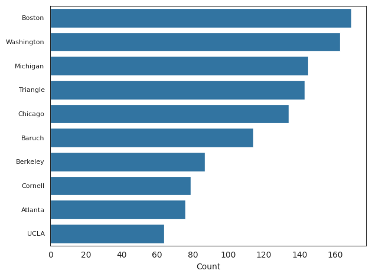
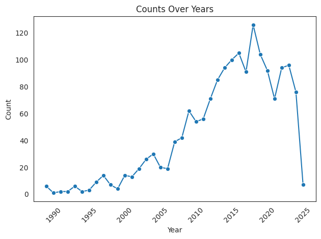
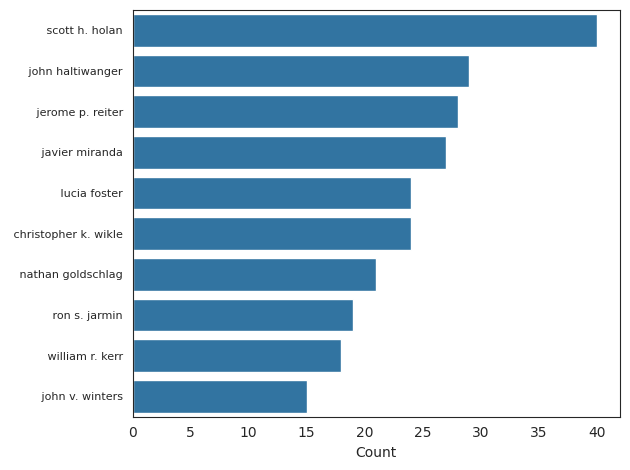
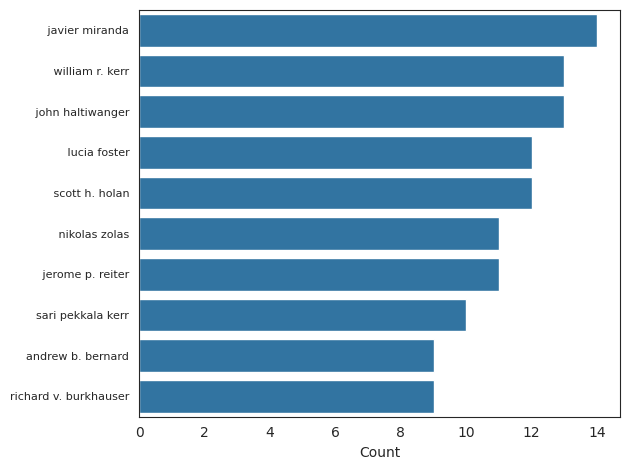

This dashboard presents our data analysis and visualization results for Project 3 in CIT5900.
This chart shows the 10 RDCs with the most research outputs.
Line chart showing the number of publications by year.
Authors with the most FSRDC research outputs.
Additional analysis, such as citation metrics or topic clustering.
